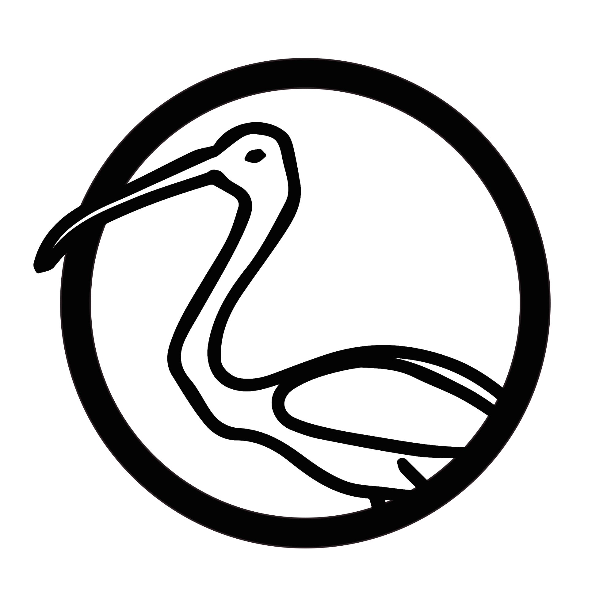

{#Thoth}, a simple static blog generator.

Meet Thoth
{#Thoth} (or more commonly Thoth) is a new, simple static blog generator written in Swift.
Just write your articles in Markdown, put them in a directory, point Thoth to this directory, add a template, SFTP settings and an output directory, and voilà !
Thoth will generate HTML pages for all articles, drafts, and index, and upload the output to your SFTP.
You can use it as a command-line tool :
$ thoth scribe /path/to/your/blog/folder
or launch it as an application which will display its own prompt :
./Thoth
Welcome in {#THOTH}, a static blog generator.
> scribe /path/to/your/blog/folder
Export done !
Uploading to FTP... Upload done !
> _
Install and setup
Install
You can either download the installer package from the download folder and execute it : Thoth will be installed in /usr/local/bin, or you can download the sources and compile it using Xcode.
Setup
You can ask Thoth to create a folder containing a config file and all the needed directories by running the command setup /path/to/the/future/blog/directory. Then, fill the config file with the corresponding information, and register your SFTP password in the OS X keychain using the password /path/to/blog/directory -set "yourPassw0rd".
The config file is a plain text file, so you can create it yourself if you prefer (see the Config file section). In all cases, you must fill it before running other Thoth commands.
Don't forget to add a template in the corresponding folder. You can use the default template, stored in the download folder of this repository.
When you want to generate and upload your site for the first time, use the first /path/to/your/blog/folder command.
Writing
Each article markdown file should be put in the articles directory, and follow this header style :
#The title
32/12/2032
The author (optional)
The beginning of the article content starts here. Nullam id dolor id nibh ultricies vehica
ut id elit. Maecenas sed diam eget risus varius blandit sit amet non magna.
For drafts, just replace the date on the second line by the mention draft. Those files will be treated separately, and listed in an index-drafts.html file in the output.
Once you have finished writing your article, run the scribe /path/to/blog/folder command to automatically update the output and upload it. Do the same if you want to preview a draft online, or just call generate /path/to/blog/folder to generate it in the output folder.
Commands
setup <path>
Creates the configuration files and folders (articles, template, output, ressources) in the indicated directory.
Argument:
<path>points to the directory where the configurations files and folders should be created.first <path>
Runs the first generation/upload of the site
Argument:
<path>points to the directory containing the config file of the site to generate-
generate <path> [-a|-d|-f]
Generates the site in the specified ouput folder. All existing files are kept. Drafts are updated. New articles are added. Index is rebuilt.
Argument:
<path>points to the directory containing the config file of the site to generate
Options:-
-arebuilds articles only
-
-drebuilds drafts only
-
-fforces to rebuild everything
-
-
upload <path> [-a|-d|-f]
Upload the content of the site to the FTP set in the config file
Argument:
<path>points to the directory containing the config file of the site to generate
Options:-
-auploads articles only
-
-duploads drafts only
-
-fuploads everything (Warning: the content of the ftp directory where the site content is put will be deleted)
-
scribe <path> [-a|-d|-f]
Combines generate and upload with the corresponding path and option
Argument:
<path>points to the directory containing the config file of the site to generate and upload-
password <path> (-set|-update|-remove) "password"
Manage the password of the SFTP account, stored in the OSX user Keychain
Arguments:
<path>points to the directory containing the config file of the site to manage
One of the three following operations:-
-setcreates a keychain entry to store the password associated with the configured SFTP account
-
-updateupdates the keychain entry with the new password value
-
-removedeletes the keychain entry associated with the configured SFTP account
"password"value of the password, needed when using the -set and -update options -
index <path>
Regenerates the index.html file.
Argument:
<path>points to the directory containing the config fileresources <path>
Rebuilds the resources directory.
Argument:
<path>points to the directory containing the config filecheck <path>
Checks the configuration file.
Argument:
<path>points to the directory containing the config filehelp
Displays this help text--version
Displays the current Thoth versionlicense
Displays the license textexit
Quits the program
Functionalities
Templates
Create your own HTML templates : Thoth expects at least two files in the template folder: index.html and article.html. All other files and folders will be also copied. Thoth uses a keywords system for inserting your articles content in the template you created or downloaded. Those keywords are simple and easy-to-use. You can use :
-
{#BLOG_TITLE}to insert the blog title -
{#TITLE}to insert an article title -
{#AUTHOR}to insert the author name -
{#DATE}to insert the date of an article -
{#LINK}to insert a link to an article. -
{#CONTENT}to insert the content of an article -
{#SUMMARY}to insert a shortened version of an article (200-300 characters max.) -
{#ARTICLE_BEGIN}and{#ARTICLE_END}in the index.html template to delimitate the HTML corresponding to an article item in the list.
You can also provide a syntax.html file containing code for syntax highlighting. It will be inserted in the <head> section of each article that contains at least a block of code (<pre><code>...</code></pre>).
Config file
A simple, human-readable config file. No XML, JSON or YAML. Just a simple flat text file, nothing more. It should be put at the root of your blog folder, along with articles, template, output folders. The current settings are :
the path to the template folder (defaults to
rootPath/template)
templatePath: /custom/path/to/the/template/folderthe path to the articles folder containing the .md files (defaults to
rootPath/articles)
articlesPath: /custom/path/to/the/articles/folderthe path where Thoth should output the generated content (defaults to
rootPath/output)
outputPath: /custom/path/to/the/output/folderthe default author name to use on each article page (defaults to the current Mac user)
defaultAuthor: Simon Rodriguezthe date style used in each article (in the .md file) (defaults to
MM/dd/yyyy)
dateStyle: dd/MM/YYYYthe title of the blog (defaults to "A new blog")
blogTitle: My blog !the default width for each image in articles html pages (defaults to
640)
imageWidth: 640set to true if you want each image of an article to link directly to the corresponding file (defaults to
false)
imagesLinks: truethe sftp address pointing to the exact folder where the output should be uploaded
ftpAdress: domain-sftp.com/folder/for/blogthe sftp username
ftpUsername:the sftp port to use (defaults to 22)
ftpPort: 22the online URL of the blog, without "http://"
siteRoot: blog.mysite.com
The password for the SFTP access is now stored in the OS X user keychain. See the password command for more details.
Extended markdown parsing
You can create inline footnotes using the common format :
[^ here's the content of my footnote]
Use the classes footnote-link and footnote in your template to style the footnotes links and content, respectively.
You can also easily manage your images size in markdown, either by setting a default width, or defining it using the following syntax :

or just

to automatically set the height according to the picture ratio. Pictures from your articles which are stored on your computer are also retrieved by Thoth and copied in article-specific folders, for an easier management.
You can also integrate HTML5 videos in your articles using the following syntax:
?[alt text](http://url/to/video.mp4 "800,600")
(There is not automatic copy of local videos yet.)
Comments and ignored files
In the config file, lines beginning with a # or a _ will be ignored.
During articles processing and copy, files beginning with _ or # won't be processed or copied.
TODO:
- adding support for referenced footnotes
- adding the generation of sitemap.xml ~and feed.xml~ files
- fix unsynchronized logs when uploading
Authors and Contributors
Created in Swift using Xcode by Simon Rodriguez.
See the license file for the licenses of third-party components and libraries.
Support or Contact
Having trouble with Thoth? Contact me at contact[...]simonrodriguez[...]fr and I'll try to help you.